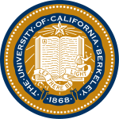

Experience
Here you can find a copy of my resume in pdf form!
Education
University of California, Berkeley
B.S. Electrical Engineering & Computer Science (EECS), 2018
Relevant Coursework:
- Structure of Computer Programs
- Data Structures
- Computer Architecture and Machine Structures
- Internet Architecture and Protocols
- Discrete Mathematics and Probability Theory
- Efficient Algorithms and Intractable Problems
Skills:
| Frontend | Backend | Mobile | Design | |||
|---|---|---|---|---|---|---|
| HTML5 | Java | iOS (Swift, Objective-C) | Photoshop | |||
| CSS3 | Python | Android (Java) | Illustrator | |||
| Javascript | C/C++ | PaintCode | ||||
| jQuery | MySQL | |||||
| Bootstrap | Ruby on Rails | |||||
| Angular JS | ||||||
Work Experience
iOS Development Intern @ Waller Lab
May 2016 - August 2016
Implemented openCV framework and conducted performance comparisons for CellScope mobile microscopy applications at Waller Lab, UC Berkeley. Application produces higher resolution images from raw pixel data acquired in mobile device by the CellScope microscope via Bluetooth.
CS 61B Lab Assistant @ UC Berkeley
August 2015 - May 2016
Responsible for assisting students in grasping key concepts of data structures, sorting algorithms, runtimes, and basic software engineering concepts, as well as answering project or lab-related questions.
Software Development Intern @ Hyundai Capital America
May - June 2015
Assisted the transition from manual check sampling to an electronic auditing system. Expedited the audit procedure through more efficient check sampling, lease and retail void processing, and flat cancel and re-book tracking.
Research Assistant @ University of Southern California, Keck School of Medicine
June - August 2015
Research assistant under Dr. Keigo Machida in a microbiology/immunology laboratory studying molecular oncogenesis, the mechanism of carcinogenesis through cancer stem cells, using mouse models associated with the hepatitis virus.
Founder, President @ Science and Technology Out-Reach Mission (STORM)
July 2013 - May 2014
Founded a student run organization at the Discovery Science Center with the purpose of inspiring young students to pursue careers in the STEM fields by making resources and opportunities available to elementary students of all social classes and genders.
Through a partnership with Fremont Elementary School and a $500 grant from Kia Motors America, we coordinated hands-on science experiments and engineering projects for the students on a weekly basis.
Honors and Awards
- US Biology Olympiad Semifinalist, 2013
- Congressional Award Gold Medal, 2013
- National Merit Scholarship Finalist, 2013
- AP Scholar with Distinction, 2013
- National history Day National Competition Finalist, 2012
- Presidential Volunteer Service Gold Level Award, 2012
- MENSA, 2012 - present
- Young Naturalist Award Semifinalist, 2011